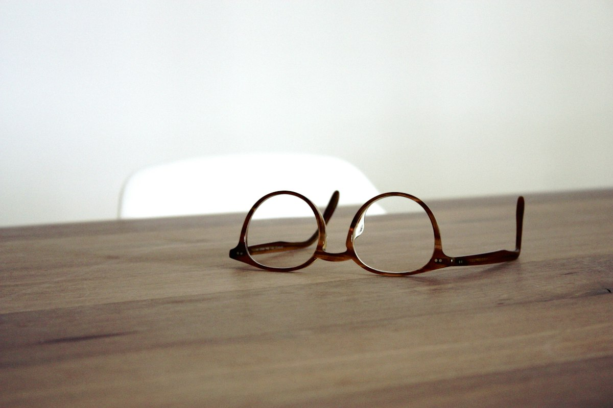
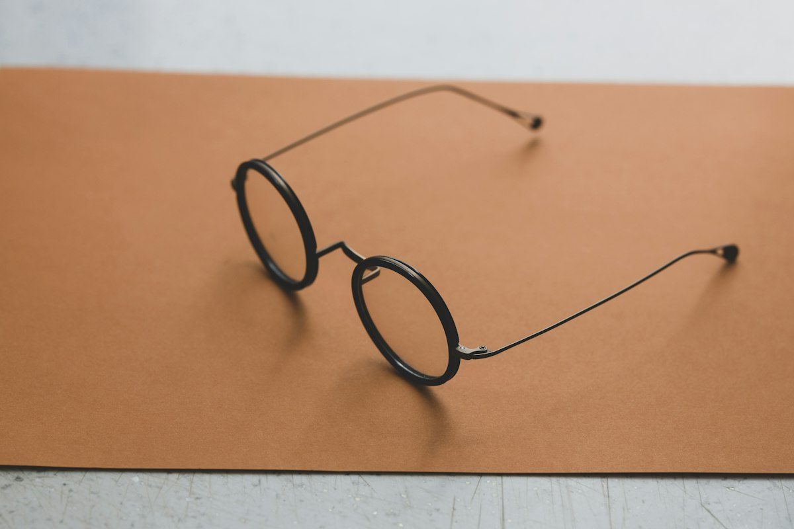
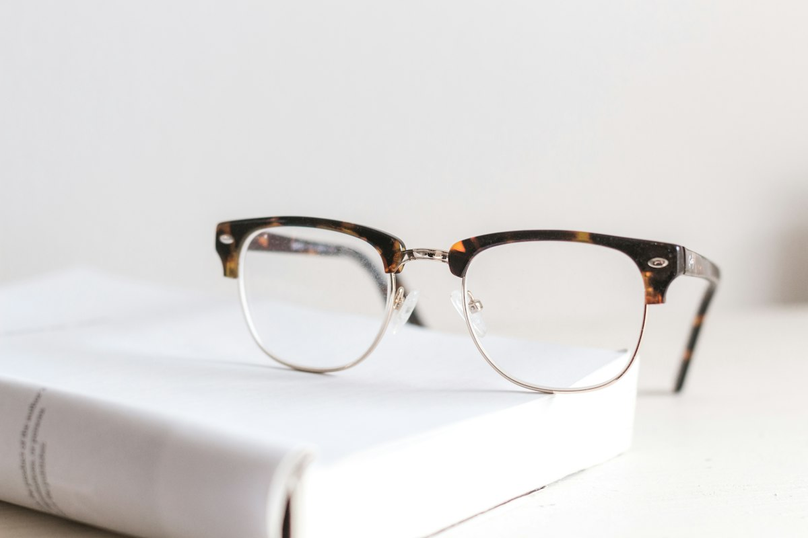

See well. Look like yourself.
An independent optician in Larkfield. Eye exams that take the time they need, an OCT scan when you want the full picture, and frames fitted by hand.
An independent optician on Fernhill Road
EyeMax is a small practice with two consulting rooms, a fitting bench by the window and a workshop at the back where lenses are edged and frames are adjusted. You see the same optometrist each year, so the person checking your eyes already knows what they looked like last time.
We test eyes properly, which takes longer than the high-street quarter hour. Every adult exam includes a retinal photograph, and our complete exam adds a 3D OCT scan of the layers at the back of the eye. That is how early glaucoma and macular changes are found before you notice anything.
Then we help you choose glasses that suit your face and your day. No commission on frames, no pressure to upgrade lenses you do not need, and every pair is adjusted on your face before you leave.
- Average complete exam
- 45 min
- Frames on the wall
- 600+
- Seeing patients on Fernhill Road
- 12 yrs
- Patients who rebook
- 98%
Sample figures for a fictional practice.
Everything for your eyes under one roof
Exams, glasses, contact lenses and repairs are all done here, by the same small team. Nothing is sent away except the rare soldered frame repair.
Eye exams
Essential and complete exams, with retinal photos as standard and an OCT scan when you want the full picture.
More about eye examsGlasses
Over 600 frames from small independent makers, fitted by hand and finished with lenses edged in our own workshop.
More about glassesContact lenses
Fittings for first-time wearers, a proper teach session and two aftercare checks included in the first three months.
More about contact lensesKids' eyes
Unhurried exams for children, myopia management lenses and free damage cover on every child’s pair for a year.
More about kids' eyesSunglasses
Prescription and plain sunglasses with UV400 lenses, polarised for driving glare and water, single vision or varifocal.
More about sunglassesRepairs
Walk in for screws, nose pads and adjustments. Free for our patients, a small fee for frames bought elsewhere.
More about repairs
A few frames from the wall
Seven from the six hundred or so on display. Prices include basic single vision lenses with a scratch-resistant coating. Filter by shape and material, or search by colour.
7 frames shown
Arden
$149Black and crystal. Size 52-18-145.
A steady everyday frame with a slightly rounded top line.
rectangleacetatemedium

Cobble
$139Warm tortoise. Size 47-21-140.
Soft round lenses and a keyhole bridge that sits low on the nose.
roundacetatesmall
Lindley
$219Brushed gold. Size 49-20-145.
Thin titanium rims that weigh almost nothing. Good for sensitive skin.
roundtitaniummedium

Pell
$209Matte black wire. Size 45-22-140.
A fine wire frame for smaller faces and lighter prescriptions.
roundtitaniumsmall
Harrow
$169Dark tortoise. Size 54-19-145.
A thicker front with real presence. Takes high prescriptions well.
squareacetatelarge
Marlo Sun
$189Gold with amber lenses. Size 55-17-145.
A teardrop sunglass with UV400 lenses. Can be glazed to prescription.
aviatormetalmedium

Quill
$179Tortoise brow, silver rim. Size 50-21-145.
An acetate brow over a metal rim. Reads as smart without trying.
browlinemixedmedium
Not sure where to start?
Three questions, then two frames to try first. It is a starting point, not a rule. Plenty of people with round faces look great in round frames.
In the studio, Jonah will look at your face shape, skin tone, prescription and how you wear your hair before suggesting anything.
Question 1 of 3
What does your face look like from the front?
What an anti-reflective coating actually changes
Uncoated lenses reflect around eight percent of the light that hits them. That shows up as white flashes from screens and headlights, and as a mirror over your eyes in photos and video calls. A good multi-layer coating cuts that reflection to under one percent. Drag the handle to compare the same view with and without it.
- Fewer halos around headlights and street lamps when driving at night
- Your eyes stay visible on video calls instead of two bright rectangles
- Thinner high-index lenses need it most, because they reflect more
- Our coatings include a hard scratch layer and an easy-clean top coat
Fitted on your face, not on a chart
Most glasses are measured once and never touched again. At EyeMax the person who measured you is the person who hands them over, and the fitting takes as long as it needs.
We warm acetate arms and shape them around the ear, set nose pads so the lens centres line up with your pupils, and check the angle of the front so varifocal zones land where your eyes actually look. Come back whenever they slip. Adjustments are free for as long as you own the frame.
Your visit, start to finish
1.Book a time that suits
Choose an essential or complete exam online or by phone. Thursday evenings and Saturday mornings go first, so book a week ahead if you can.
2.Pre-tests with a technician
Eye pressure, a retinal photograph and, for complete exams, a 3D OCT scan. It takes about ten minutes and nothing touches your eye.
3.Your exam with an optometrist
We check your vision, your prescription and how your eyes work together, then go through every image with you on the screen.
4.Choose and fit your frames
Try on as many as you like. We measure your pupils and fitting height, then glaze the lenses in our workshop in five to seven working days.
What patients tell us
These are sample reviews written for this concept site. EyeMax is a fictional practice.
I put off varifocals for two years because I was told they make you seasick. The fitting took twenty minutes, they set the heights twice, and I was reading menus on the walk home.
Daniel, 34, First varifocals. Sample review.
1 / 4
Six habits that make glasses last
Small things that save coatings, keep frames straight and stop contact lens trouble before it starts.
Dust is abrasive. Rinse both lenses under lukewarm water, add a drop of unscented washing-up liquid, rub gently with your fingertips, rinse again and dry with a clean microfibre cloth. A dry shirt corner grinds grit into the coating.
Pulling them off one-handed twists the front and loosens the hinges over time. Two hands keep the arms parallel and the fit you paid for stays put for much longer.
A car in sunshine can reach over 60°C inside. Acetate softens and loses its shape, and anti-reflective coatings can craze into a fine web of cracks. Keep them in the case, in the glovebox or your bag.
It stretches the arms outwards so the frame slides down your nose afterwards. If they already slip, bring them in and we will reshape them for free.
Every 20 minutes, look at something about 20 feet away for 20 seconds. Your blink rate drops from around 20 a minute to 6 or 7 while you concentrate on a screen, which is what makes eyes feel dry and tired.
Cases grow a biofilm that solution alone does not remove. Rinse with fresh solution, never tap water, leave it upside down to air dry and swap it for a new one each time you open a new bottle.
Find us on Fernhill Road
Five minutes from Larkfield station, opposite the covered market. Step-free entrance, a hearing loop at the front desk and two consulting rooms on the ground floor.
48 Fernhill RoadLarkfield Market QuarterLarkfield LK4 2RD(555) 014-2290Checking today’s hours…
- Monday9am to 6pm
- Tuesday9am to 6pm
- Wednesday9am to 6pm
- Thursday9am to 8pm
- Friday9am to 6pm
- Saturday9am to 3pm
- SundayClosed
Due an eye exam? Most people are.
If it has been two years or more, or anything has changed, book a time this week. It takes thirty to forty-five minutes.